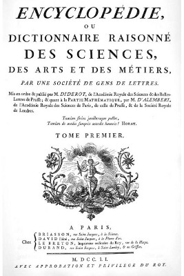
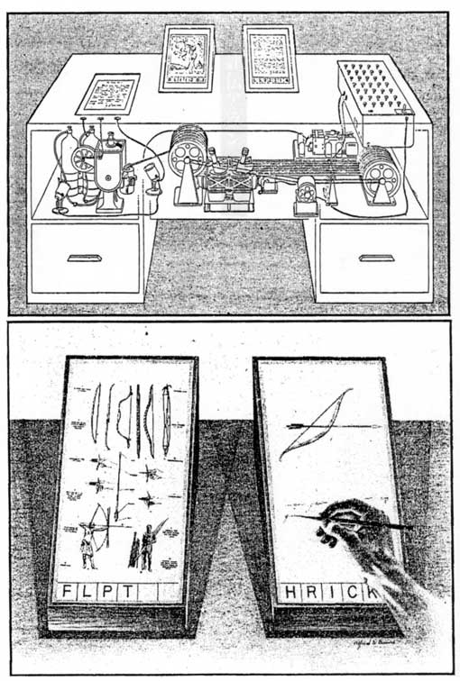
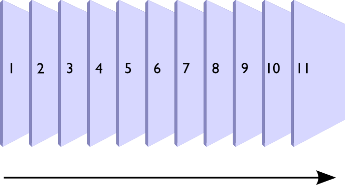
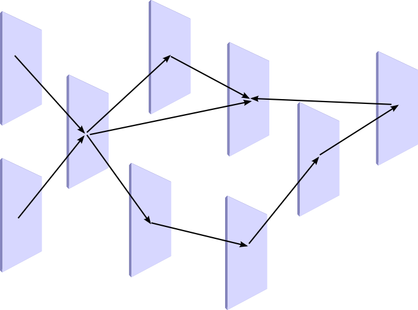

(2) Abstract
The Web is, in the words of its creator Tim Berners-Lee, a "global information space." The Web is relatively new, but the vision of a global information space is at least a century old. Looking back at these early visions can give us a sense of the recurring problems in human communication and information management to which the Web was intended to be a solution. Yet we must be careful to avoid seeing an unbroken line of technological progress where there was none: many of the pioneers of information management were forgotten, and later generations constructed their own pragmatic historical narratives.
Early visionsEarly visionsEarly visionsEarly visions
(4) Diderot's Encyclopédie and the European Enlightenment
The work whose first volume we are presenting today has two aims. As an Encyclopedia, it is to set forth as well as possible the order and connection of the parts of human knowledge. As a Reasoned Dictionary of the Sciences, Arts, and Trades, it is to contain the general principles that form the basis of each science and each art, liberal, or mechanical, and the most essential facts that make up the body and substance of each.

Jean Le Rond d'Alembert, [http://en.wikipedia.org/wiki/Encyclopédie],1751
(5) Basic Problems
- Problem of the generation and collection of vast amounts of knowledge and information
- Problem of Accessibility
- Problem of Presentation
- Problem of Relevance (meaning, semantics)
- Abstraction of Form from Content
- All dogs are canines
- All X are Y
- The sum of the angles of a triangle is equal to Lady Gaga
(6) Paul Otlet & the Mundaneum
- Otlet (1868-1944) was a Belgian lawyer and bibliographer who envisioned "the creation of a kind of artificial brain by means of cards containing actual information or simply notes or references"
- The "monographic principle": individual facts would be extracted from texts and put onto individual 3x5 cards that would be indexed and cross-referenced (hypertext)
- In 1895 he began building this system, called the Mundaneum, and amassed over 12 million cards
- Eventually the project collapsed under the strain of managing that much paper, and Otlet began to envision electronic alternatives
Source: Edward Vanhoutte, [http://edwardvanhoutte.blogspot.com/2009/03/paul-otlet-1868-1944-and-vannevar-bush.html]
(7) Paul Otlet & the Mundaneum
- Otlet (1868-1944) was a Belgian lawyer and bibliographer who envisioned "the creation of a kind of artificial brain by means of cards containing actual information or simply notes or references"
- The "monographic principle": individual facts would be extracted from texts and put onto individual 3x5 cards that would be indexed and cross-referenced (hypertext)
- In 1895 he began building this system, called the Mundaneum, and amassed over 12 million cards
- Eventually the project collapsed under the strain of managing that much paper, and Otlet began to envision electronic alternatives
Source: Edward Vanhoutte, [http://edwardvanhoutte.blogspot.com/2009/03/paul-otlet-1868-1944-and-vannevar-bush.html]
(9) Wilhelm Ostwald & The Bridge

- Ostwald (1853-1932) was a Baltic German chemist and winner of the Nobel Prize in Chemistry in 1909
- Used his prize money to finance Die Bruecke ("The Bridge"), an "international institute for the organizing of intellectual work", counting Marie Curie and Andrew Carnegie among its members
- Promoted the creation of a "world brain" along Otlet's principles
- The monographic principle / hypertext
- Standardization of paper sizes
- Uniform indexing using Otlet's universal classification scheme
Source: Michael Buckland, [http://people.ischool.berkeley.edu/~buckland/ponto.html]
(10) H.G. Wells & the World Brain
There is no practical obstacle whatever now to the creation of an efficient index to all human knowledge, ideas and achievements, to the creation, that is, of a complete planetary memory for all mankind. … The whole human memory can be, and probably in a short time will be, made accessible to every individual. … It need not be concentrated in any one single place. It need not be vulnerable as a human head or a human heart is vulnerable. It can be reproduced exactly and fully, in Peru, China, Iceland, Central Africa, or wherever else seems to afford an insurance against danger and interruption. … It is a matter of such manifest importance and desirability for science, for the practical needs of mankind, for general education and the like, that it is difficult not to believe that in quite the near future, this Permanent World Encyclopaedia, so compact in its material form and so gigantic in its scope and possible influence, will not come into existence.
H.G. Wells, [https://sherlock.ischool.berkeley.edu/wells/world_brain.html], 1937
(11) Emanuel Goldberg

- Goldberg (1881-1970) was a Russian Jew, chemist by training, who invented many key optical imaging technologies
- He received his doctorate from Wilhelm Ostwald's institute
- In 1927 Goldberg built the first functioning document retrieval system to use electronics
- "He would dial a number, would press a button and after three seconds the document would be projected [on a screen]"
- Wells' (later) vision of a "World Brain" was based such microfilm technology
- In 1933 he was kidnapped by Nazis and disappeared into oblivion
Source: Michael Buckland, [http://people.ischool.berkeley.edu/~buckland/goldberg.html]
(12) Vannevar Bush & the Memex
(13) Vannevar Bush & the Memex

Hypertext systems
(15) Hypertext / Hypermedia
"Hypertext" is non-sequentially linked pieces of text or other information. If the focus of such a system or document is on non-textual types (1) of information, the term hypermedia is often used instead. In traditional printed documents, practically the only such link supported is the footnote [really?], so hypertext is often referred to as "the generalized footnote."
(1) E.g. graphics, sound, moving images from videodisks, executable programs.
Jakob Nielsen, [http://portal.acm.org/citation.cfm?id=43953]
(16) Linear text

(17) Hypertext

(19) Xanadu

- Project Xanadu was the first computer hypertext project, founded in 1960 by Ted Nelson
- No implementation was relased until 1998, and that was incomplete
- Despite his failure to produce a working system, Nelson is responsible for popularizing ideas about hypertext
- His 1974 book Computer Lib/Dream Machines inspired many early computing and hypertext pioneers
(20) NLS/Augment

- NLS (oN-Line System) was developed by Doug Engelbart at the Stanford Research Institute in the 1960s
- NLS was the first working computer system to employ hypertext links
- Engelbart and his Augmentation Research group also invented the mouse and dividing the screen into windows
(21) NoteCards

- Developed at Xerox PARC (Palo Alto Research Center) in 1984
- "Notecards" contain text, graphics, or images
- Notecards are connected into networks by links
- "Browsers" and "file boxes" are used to manage networks of cards and links
(22) HyperCard

- Developed at Apple and first released in 1987; bundled with all new Macs at that time
- The most successful hypermedia system prior to the Web
- A "stack" of virtual "cards", similar to NoteCard
- HyperCard was the [http://c2.com/cgi/wiki?WikiWikiHyperCard] for the first wiki
(23) Hypertext/Hypermedia Research
- These are just a few of the many, many hypertext and hypermedia systems developed during the 1970s and 1980s
- Hypertext was a very active area of research in academia and industry
- By 1987 there was a conference (ACM Conference on Hypertext and Hypermedia) that is still going on today
- However, the Web did not arise from this community and was initially rejected by it
Birth of the Web
(25) A global information space
Suppose all the information stored on computers everywhere were linked, I thought. Suppose I could program my computer to create a space in which anything could be linked to anything. All the bits of information in every computer at CERN, and on the planet, would be available to me and to anyone else. There would be a single, global information space.
Tim Berners-Lee, [http://www.worldcat.org/oclc/41238513]
(26) CERN
- Pan-European laboratory for research in nuclear physics using particle colliders
- Experiments take months to complete, generate massive amounts of data, and involve hundreds or thousands of scientists around the world
- 100s of networked computers needed to control the colliders, monitor the experiments and manage data
- By 1990 CERN is the largest Internet node in Europe
- 1989: The Large-Electron Positron (LEP) collider is completed
- Tim Berners-Lee [http://www.w3.org/History/1989/proposal.html] a new distributed information system in relation to the next-generation facility, the LHC (completed in 2007)
Source: Oxford Brookes University, [http://www.w3c.rl.ac.uk/primers/history/origins.pdf]
(27) Tim Berners-Lee
- 1980: TBL begins work as a contract programmer at CERN and builds ENQUIRE, a hypertext system to help him keep notes
- named after a Victorian-era reference book with short entries indexed and cross-referenced
- 1984: TBL returns to CERN to work on getting networked computers to coordinate with one another
- begins thinking about how to re-implement ENQUIRE so that it could be distributed across multiple computers
- 1989: TBL makes his initial [http://www.w3.org/History/1989/proposal.html] to CERN management
- A "distributed hypertext system" for managing information at CERN
Source: Oxford Brookes University, [http://www.w3c.rl.ac.uk/primers/history/origins.pdf]
(28) TBL's Requirements
- Remote access
- accessible over the network from anywhere
- Heterogeneity
- accessible across different kinds of computers and operating systems
- Non-centralization
- link together existing and new systems without central control or coordination
- Access to existing data
- provide access to existing databases as though they were in hypertext form
Source: Tim Berners-Lee, [http://www.w3.org/History/1989/proposal.html], March 1989
(29) TBL's Requirements

- Private links
- add one's own private links to and from public information
- Display
- ASCII text on a 24x80 screen sufficient, graphics optional
- Data analysis
- some degree of automatic analysis to see structural patterns among the linked nodes
- Live links
- every time a link is followed, the latest version of the information is retrieved
Source: Tim Berners-Lee, [http://www.w3.org/History/1989/proposal.html], March 1989
(30) TBL's Non-requirements
Discussions on Hypertext have sometimes tackled the problem of copyright enforcement and data security. These are of secondary importance at CERN, where information exchange is still more important than secrecy.
Tim Berners-Lee, [http://www.w3.org/History/1989/proposal.html], March 1989
A 3rd non-requirement: link integrity. Earlier hypertext systems did not allow for broken links, and thus required central coordination. TBL's system simply returned an error when a link pointed to a non-existent node.
The only way in which sufficient flexibility can be incorporated is to separate the information storage software from the information display software
(31) Sidenote: The Web vs. Gopher
- [http://en.wikipedia.org/wiki/Gopher_(protocol)] is a networked hypertext system that was developed at the University of Minnesota around the same time as the Web (1991)
- From 1991-1993 it was very popular at universities
- The open architecture of the Web made it easy to incorporate Gopher sites, but not vice-versa
- In 1993 U of M announced that they would begin charging licensing fees, driving many users to adopt the Web instead
(32) Early milestones
- November 1990: First Web server, and Web page, come online
- Christmas 1990: [http://www.w3.org/People/Berners-Lee/FAQ.html#browser] demonstrated ( [http://www.w3.org/MarkUp/tims_editor])
- February 1993: First version of [http://en.wikipedia.org/wiki/Mosaic_(web_browser)] released ( [http://www.computerhistory.org/timeline/images/1993_mosaic_browser_large.jpg])
- March 1994: Marc Andreessen and colleagues leave NCSA to form "Mosaic Communications Corp." (later [http://en.wikipedia.org/wiki/Netscape])
- May 1994: [http://www.cern.ch/WWW94/] held at CERN
- October 1994: [http://www.w3.org/] founded; Netscape browser relased
- August 1995: Microsoft releases [http://en.wikipedia.org/wiki/Internet_Explorer_1] ( [http://www.microsoft.com/library/media/1033/windows/IE/images/community/columns/old_ie.gif])
- July 1995: [http://amazon.com] launches ( [http://www.tranquileye.com/cyber/1995/amazondotcom_1995.gif])
(33) Conclusions
Like earlier attempts at building a "global information space", the Web was designed in response to the information management needs of large-scale, institutional science. Tim Berners-Lee was able to build upon previous technologies and incorporate ideas from previous systems to meet these needs. His emphasis on decentralization, use of existing infrastructure, and decision to make WWW technology freely available enabled it to spread and grow quickly. The 1993 decision to allow commercial uses of the Internet, and suitability of Web technology for e-commerce, resulted in explosive economically-fueled growth. In the process of its remarkable growth, however, some of the properties of the early web were de-emphasized (e.g. symmetry between reading and writing).

{kind=link}
{kind=link}
{kind=link}